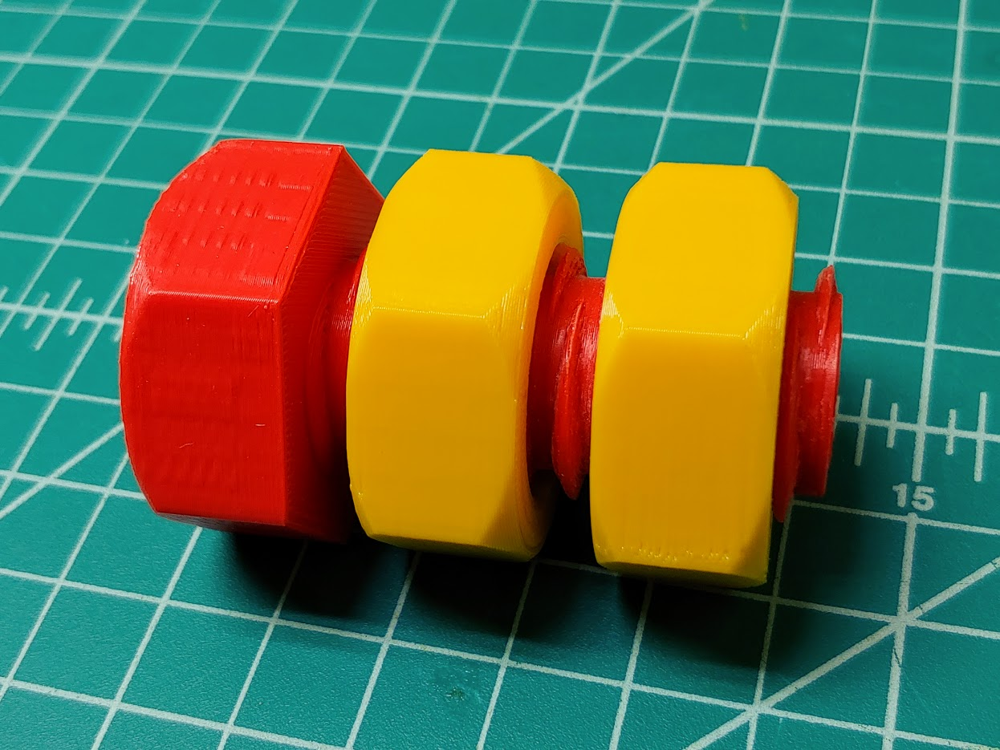
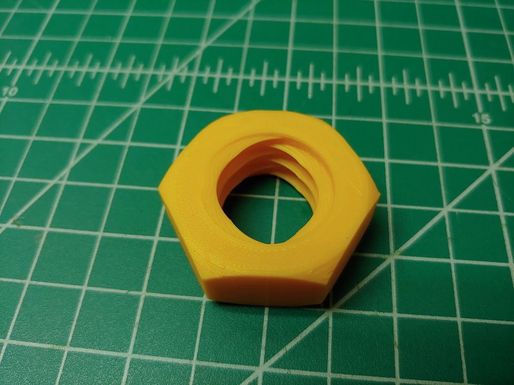

A thought experiment about whether it would be possible to apply both right- and left-handed threads to a nut or bolt led me to give it a try on the 3D printer. It turns out you can make bolts that accept both types of nuts and nuts that accept both types of bolts, but putting double-threaded nuts onto double-threaded bolts doesn't work very well, unsurprisingly. I was a little surprised though at how well the double-threaded fasteners worked with standard ones.
I got a good amount of practice on this project tweaking clearances and 3D printer settings to get nice fits right off the printer so I could print a bunch of sets to give to friends as fidget toys. I also learned single-point threading and will be machining a metal set when I have time.
 